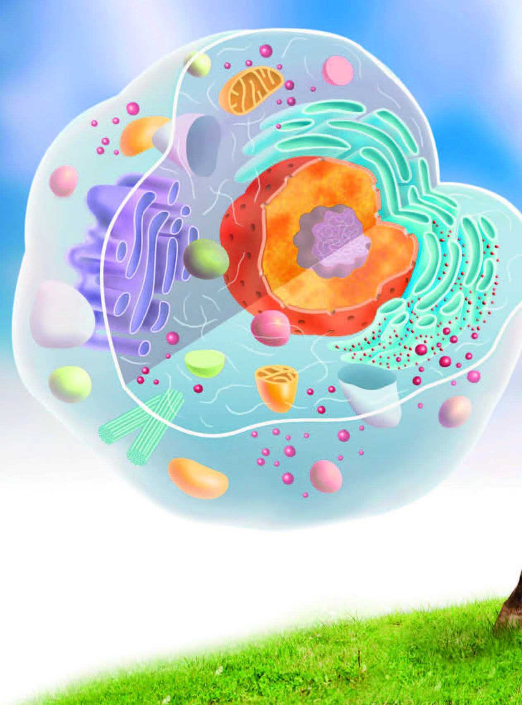

14 Biología celular

14.1 Teoría celular
Actualmente podemos decir sin temor a equivocarnos que las células son la unidad básica de vida, ya que todos los seres vivos están formados por células. Sin embargo, para llegar a esta conclusión hubo que desarrollar una teoría celular que tardó cerca de 200 años en completarse y ser aceptada por toda la comunidad científica.
La primera persona en utilizar la palabra célula fue Robert Hooke, quien observó a través de un microscopio primitivo una lámina de corcho en la que observó una serie de celdillas que se repetían continuamente y de forma ordenada. A estas celdillas fue a lo que Hooke denominó célula. Ahora sabemos que lo que Hooke observó eran células vegetales muertas.
Poco después de que Hooke utilizara por primera vez la palabra célula, se realizaron grandes avances tecnológicos en lo que refiere a los microscopios, con lo que cada vez se podían observar mejor las distintas muestras y con mayor cantidad de aumentos. Estos avances en microscopía se deben principalmente a Anton Van Leeuwenhoek.
A pesar de estos avances en microscopía, hubo que esperar hasta 1838 para realizar más progresos en la teoría celular. Fue cuando Theodor Schwann y Matthias Schleiden estudiaron tejidos animales y vegetales respectivamente. Ambos se pusieron en contacto y definieron que tanto los animales como las plantas estaban todos formados por células; e incluso llegaron a definir que la célula puede tener vida de forma independiente.
Con esto, se sentaron las bases de la teoría celular, pero no estuvo completa hasta 1858, año en el que Rudolf Virchow propuso el axioma «omni cellula e cellula», lo que significa que todas las células provienen de una célula ya existente.
Actualmente consideramos cuatro postulados para la teoría celular:
Todos los organismos están compuestos por células.
En las células ocurren las reacciones metabólicas de los seres vivos, necesarias para que exista la vida.
Las células provienen de células preexistentes.
En las células se encuentra el material genético hereditario.
14.2 Origen de la célula
La aparición de las primeras células con núcleo y orgánulos diferenciados, las eucariotas, se sitúa hace unos 1400 millones de años. Su aparición se explica según la teoría de la endosimbiosis seriada propuesta por Lynn Margulis.
La teoría de la endosimbiosis propone que el origen de las células eucariotas se encuentra en la incorporación sucesiva de células procariotas que crean una relación de simbiosis interna.
Según esta teoría, una célula procariota primitiva fagocitaría a una bacteria más pequeña capaz de obtener energía mediante la respiración celular. En vez de digerir a esta bacteria, el organismo primitivo mantendría en su interior a la bacteria, puesto que podría beneficiarse de su creación de energía por la respiración. Por su parte, la bacteria pequeña obtendría el beneficio de la protección que le otorgaría estar en el interior de un organismo más grande. Este sería el origen de las mitocondrias.
Según Margulis, este mismo proceso habría ocurrido con bacterias espiroquetas las cuales llegarían a formar flagelos. De esta forma se originaría un organismo heterótrofo que podría evolucionar hacia protozoos y, más tarde, hacia las células animales tal y como las conocemos actualmente.
Por otro lado, ese organismo primitivo también podría haber ingerido una cyanobacteria, capaz de realizar la fotosíntesis, y al mantener también con ella una relación endosimbiótica, se habrían originado los cloroplastos y, por tanto, las células vegetales primitivas.
Esta teoría explicaría la presencia de ADN, propio en algunos orgánulos como las mitocondrias y los cloroplastos, así como la presencia en estos de una doble membrana que sería resultado de la envoltura de una célula por la membrana de la célula de mayor tamaño.
14.3 La célula
La célula, por tanto, es la base de la vida, pero, igual que encontramos diversidad de organismos, también existe diversidad de células. Principalmente diferenciamos dos tipos de células: procariotas y eucariotas.
14.3.1 Célula procariota
Definimos a la célula procariota (pro = ‘antes de’ y carión = ‘núcleo’) como una célula que no posee un núcleo verdadero, ya que carecen de envoltura nuclear que delimite la zona donde se encuentra el material genético.
Además de la ausencia de envoltura nuclear, la célula procariota se caracteriza por tener un tamaño pequeño, entre 1 y 5 μm; por no poseer orgánulos y por ser el tipo de célula presente en bacterias.
14.3.2 Célula eucariota
La célula eucariota (eu = ‘verdadero’ y carión = ‘núcleo’) es aquella célula que posee un núcleo real definido por una envoltura nuclear y en cuyo interior se encuentra el material hereditario.
Su tamaño es variable, pero siempre mayor al de las células procariotas y puede ir desde 10 μm hasta varios centímetros como los huevos de algunas aves. Dan origen a todos los seres vivos que no son bacterias, esto es, a los organismos pertenecientes a los reinos protoctista, fungi, plantae y animalia.
Aunque existen diversos tipos de célula eucariota como las que conforman a los hongos, las algas o los protozoos, las células eucariotas más representativas son la célula vegetal y la célula animal.
14.3.2.1 Célula vegetal
Presente en todos los tejidos de plantas. Cuentan con una pared de celulosa, diferente al de las procariotas y hongos, y que otorga protección y rigidez a la célula. También cuentan con cloroplastos, donde ocurrirá la fotosíntesis; y poseen vacuolas de gran tamaño que ocupa gran parte de la célula desplazando al núcleo hacia un lateral.
14.3.2.2 Célula animal
Presente en todos los tejidos animales. A diferencia de las vegetales, carecen de cloroplastos y de pared celular, pero poseen centriolos que tienen una gran importancia en la división celular. Las vacuolas son más numerosas que en la célula vegetal, pero mucho más pequeñas.
14.3.3 Partes de la célula
14.3.3.1 El núcleo
La mayor parte del ADN que contiene una célula eucariota se encuentra en el núcleo, que caracteriza este tipo de células y está limitado por la envoltura nuclear.
Estructura
Según la fase en que se encuentre la célula, en el nucleoplasma distinguimos:
Los cromosomas: Largas cadenas de ADN asociadas a proteínas, las más abundantes de las cuales son las histonas. Estas proteínas permiten el empaquetado y el desempaquetado de los cromosomas según la fase del ciclo en que se encuentre la célula.
El nucléolo: Pequeño corpúsculo más o menos esférico y denso que podemos distinguirlo al microscopio óptico debido a su tamaño, entre 1 y 7 m. El nucléolo está formado por cromatina de diversos cromosomas, y por proteínas asociadas a ARN. Puede haber uno o más de uno.
Funciones
El núcleo desarrolla en las células eucariotas dos funciones fundamentales:
Contiene la información genética que se transmite de una generación a la siguiente.
Controla la actividad que tiene lugar en la célula. Estas funciones son posibles por el hecho de que:
Los cromosomas contienen un mensaje, contenido en la secuencia de sus nucleótidos, que determina la síntesis de las proteínas de la célula.
En el nucléolo se sintetiza el ARNr que formará los ribosomas y se ensamblan los componentes: las proteínas ribosómicas sintetizadas en el citosol pasan al interior del núcleo y se dirigen al nucléolo, donde se unen a las diversas moléculas de ARNr.
Una vez conseguido el ensamblaje, los ribosomas pasan al citosol, donde se completa su estructura definitiva. El control del núcleo sobre la célula es posible porque está permanentemente en contacto con el citosol, gracias al paso selectivo de sustancias que se produce a través de los poros de la envoltura nuclear.
14.3.3.2 Membrana plasmática
Constituye el límite de la célula con el medio exterior.
Composición química
Desde 1899 se sabe que las membranas plasmáticas están compuestas fundamentalmente por lípidos, que se disponen en una doble capa o bicapa lipídica en la que se insertan diversas clases de proteínas. Las proporciones de lípidos y proteínas que están presentes varían según el tipo de célula.
Los lípidos que intervienen en una mayor proporción en la composición de las membranas son los fosfolípidos y el colesterol.
Fosfolípidos
Constituyen la estructura básica de las membranas. Están formados por una cabeza hidrófila o polar y dos colas hidrófobas o apolares; es decir, son moléculas anfipáticas. Debido a esta característica, los fosfolípidos se disponen con las cabezas hidrófilas en contacto con el medio acuoso y con las colas hidrófobas en oposición a este medio.
A menudo, las colas apolares están formadas por una cadena de ácidos grasos saturada; es decir, que no presenta dobles enlaces, y otra insaturada; o sea, con dobles enlaces. Esta última cadena presenta codos, por lo que da lugar a una ligera curvatura que tiene importancia para el acoplamiento de los lípidos a la hora de formar la estructura de la membrana.
La estructura que forman los fosfolípidos no es rígida, ya que estas moléculas pueden presentar movimientos.
Difusión lateral: Un fosfolípido intercambia su posición con otro que está situado en la misma monocapa, mediante un desplazamiento lateral.
Rotación de fosfolípidos: Las moléculas giran sobre su eje longitudinal.
Flexión de las cadenas hidrocarbonadas: Los fosfolípidos aumentan o disminuyen el grado de separación de las colas hidrófobas.
Flip-flop: Un fosfolípido se desplaza verticalmente y ocupa un lugar en la monocapa opuesta. Este tipo de movimiento es muy poco frecuente.
Como veremos más adelante, estos movimientos intervienen decisivamente en los mecanismos de transporte de sustancias a través de la membrana.
A menudo, los lípidos están unidos a moléculas de glúcidos y forman glucolípidos.
Los glucolípidos se sitúan en la parte exterior de las membranas y pueden representar hasta el 5 % del total de lípidos de la membrana en las células animales.
El tipo de glucolípidos que podemos encontrar en las membranas varía según la especie, e incluso según el tipo de tejido que analicemos. Un ejemplo son los gangliósidos, muy abundantes en las membranas de las células nerviosas.
Los glucolípidos tienen funciones diversas: algunos han sido identificados como receptores químicos, es decir, moléculas exteriores a las células con capacidad para unirse a otros compuestos y provocar un cambio en la célula. También hay glucolípidos que determinan la individualidad antigénica de la célula.
Colesterol
Se encuentra en una proporción del 20 % en las membranas de las células eucariotas.
Las moléculas de colesterol se disponen de forma intercalada entre los fosfolípidos. Esta disposición limita la movilidad de los fosfolípidos, lo cual proporciona estabilidad a la membrana y también reduce su permeabilidad.
Proteínas
Las proteínas están insertadas en la bicapa lipídica, muchas se unen a glúcidos y forman glucoproteínas. Distinguimos:
Proteínas transmembrana o proteínas integrales: Son las que atraviesan completamente la membrana y sobresalen por ambas caras.
Las proteínas transmembrana tienen aminoácidos hidrófilos en las zonas que sobresalen al exterior y al interior de la célula. En la parte intermedia de la molécula, que está rodeada de las colas apolares de los fosfolípidos, se sitúan, mayoritariamente, aminoácidos hidrófobos.
Proteínas periféricas o extrínsecas: No atraviesan la estructura de la membrana y sobresalen por una de las dos caras.
Las proteínas son las encargadas de la mayor parte de las funciones biológicas que desempeñan las membranas: participan en reacciones energéticas en los intercambios a través de la membrana, etc.; por ello, muchas de estas proteínas son enzimas como la ATPasa, la proteína quinasa o la acetilcolinesterasa.
Las proteínas de membrana tienen una cierta capacidad de movimiento:
Difusión lateral: A lo largo de la membrana.
Rotación: Alrededor de un eje perpendicular a la membrana.
Sin embargo, cuando las proteínas son requeridas en una zona concreta de la membrana, disponen de diversos sistemas para anclarse a ella. Así, pueden unirse a uno o varios ácidos grasos de los fosfolípidos, o también establecer uniones no covalentes con otras proteínas de membrana.
Debido a estos anclajes, las proteínas reducen su capacidad de movimiento, la cual, normalmente, ya es inferior a la capacidad de desplazamiento de los lípidos.
La capacidad de movimiento de los fosfolípidos y de las proteínas de membrana explica la expresión mosaico fluido, utilizada por S. J. Singer y G. M. Nicolson, en 1972, para definir el comportamiento de las membranas.
Estructura asimétrica
La cara citoplasmática y la cara externa de la bicapa lipídica no son iguales, sino que presentan algunas diferencias en la composición química; estudios realizados en eritrocitos humanos han revelado estas diferencias.
En la cara externa predominan los fosfolípidos fosfatidilcolina y esfingomielina, mientras que en la cara interna los más abundantes son la fosfatidilserina y la fosfatidiletanolamina.
En la cara citoplasmática predomina una carga electroquímica negativa, por la abundancia de fosfatidilserina.
Los ácidos grasos de los fosfolípidos de la cara citoplasmática tienen más dobles enlaces que los de la cara externa y, por ello, están más curvados.
Solo hay glucolípidos y glucoproteínas en la cara externa de la bicapa.
Por este motivo, decimos que la membrana es asimétrica. Estas diferencias se generan ya en el momento de la síntesis de la membrana y son útiles para algunas actividades celulares.
Es frecuente que las células eucariotas tengan asociada a la parte exterior de la membrana plasmática una capa llamada glicocáliz, que puede alcanzar hasta 50 μm de espesor. Está compuesta por cadenas de glúcidos unidas a las proteínas de membrana, a los fosfolípidos de la capa externa, o bien a ambos. Muchos de los componentes del glicocáliz son secretados por las células y, más tarde, quedan adheridos a la superficie de la membrana.
Desarrolla una función de protección y participa en las reacciones de reconocimiento y adherencia entre las células.
Funciones
| Transporte de sustancias. |
Transporte pasivo Transporte activo
Exocitosis Endocitosis |
| Contactos entre las células. |
|
| La excreción celular. | La célula necesita expulsar de su interior los desperdicios que genera el metabolismo, así como captar nutrientes del medio externo. Estas acciones las lleva a cabo gracias a la capacidad de la membrana celular de permitir el paso selectivo de algunas sustancias. La excreción es, pues, el proceso biológico mediante el cual se eliminan las sustancias tóxicas generadas por el metabolismo. La excreción celular utiliza las vías de transporte a través de la membrana celular que hemos visto: la difusión simple, la difusión facilitada, el transporte activo y la exocitosis. |
La membrana mantiene la integridad estructural de la célula; pero, además, también controla dos funciones básicas:
El transporte de sustancias a través de ella.
Los contactos entre las células.
Transporte de sustancias a través de la membrana
Para poder llevar a cabo todas las funciones metabólicas, existen varios mecanismos de transporte que tienen lugar en las células, estas han de intercambiar sustancias con el medio exterior.
Transporte de moléculas pequeñas
Dentro de este tipo de mecanismos de transporte distinguiremos entre transporte pasivo y transporte activo.
Transporte pasivo: Es un tipo de transporte que no requiere gasto de energía y presenta dos modalidades:
Difusión simple: Algunas moléculas pequeñas y sin carga electroquímica, como el oxígeno (O2), el nitrógeno (N2), el dióxido de carbono (CO2) y también el agua (H2O), se difunden rápidamente a través de la bicapa lipídica, a favor de su gradiente de concentración. El paso se produce aprovechando las aperturas que aparecen por el desplazamiento de los fosfolípidos.
Difusión facilitada: Las moléculas que no pueden atravesar la bicapa lipídica, como los glúcidos, los aminoácidos, los iones…, pasan a través de la membrana, a favor del gradiente electroquímico o de concentración, mediante proteínas transmembranas, que pueden ser:
Proteínas de cana: Que forman poros acuosos por los que pasan algunos solutos.
Proteínas transportadoras: Que se unen a la sustancia que se debe transportar y sufren un cambio de conformación para permitir el paso de la sustancia a través de la membrana. Existen diversas modalidades para este tipo de transporte.
Transporte activo: Se produce en contra del gradiente de concentración o del gradiente electroquímico de las sustancias y, por ello, precisa energía.
Este tipo de transporte se lleva a cabo mediante proteínas transmembrana, que hidrolizan ATP para obtener energía y que, a la vez, alteran su conformación espacial para efectuar el transporte.
Es el caso de las bombas de iones, como la de sodio-potasio.
La bomba de sodio-potasio extrae Na+ de la célula, a la vez que incorpora K+. Por cada molécula de ATP que se consume, salen de la célula 3 Na+ y entran 2 K+.
Este tipo de transporte iónico a través de las membranas tiene una importancia extraordinaria, ya que da lugar a fenómenos, como la contracción muscular, el potencial de membrana, etc.
Transporte de macromoléculas y partículas
Los mecanismos anteriores no permiten el paso de moléculas grandes como los polisacáridos o las proteínas. En estos casos se utilizan otros tipos de sistemas de transporte: la exocitosis y la endocitosis.
Exocitosis: Tiene lugar cuando una macromolécula o una partícula debe pasar del interior al exterior de la célula. Las vesículas que se forman en este caso reciben el nombre de vesículas secretoras. Se desplazan hasta la membrana plasmática, se fusionan y vierten su contenido al medio extracelular.
Según el modo en que se produce la secreción se distinguen dos tipos de exocitosis:
Las vesículas se producen de manera regular en la célula y su contenido es vertido al exterior sin necesidad de que exista ningún estímulo. Es el caso de las proteínas que forman la matriz extracelular de los tejidos.
Las vesículas se producen y liberan su contenido al exterior solo cuando la célula es estimulada por alguna señal extracelular. Un ejemplo de ello es la secreción de neurotransmisores en las neuronas.
Endocitosis: Es un proceso de incorporación de sustancias a la célula. En algunos casos, se ha observado que estas sustancias se concentran en pequeñas depresiones formadas en la superficie exterior de la membrana. Cuando se produce la invaginación y se forma la vesícula, esta contiene una cantidad de sustancia superior a la que podría penetrar en la célula si no se produjese la concentración previa.
Cuando las vesículas alcanzan un diámetro superior a 150 μm y contienen partículas grandes, como restos celulares y microorganismos, se habla de fagocitosis.
Si las vesículas son de un diámetro inferior a 150 μm y contienen fluidos, el proceso se llama pinocitosis.
La fagocitosis se produce en células con un cierto grado de especialización como, por ejemplo, algunos protozoos, para los que es una parte esencial de su proceso de nutrición. Por el contrario, la pinocitosis es muy común en todo tipo de células.
Cuando las vesículas han penetrado en el interior celular, se dirigen hacia el orgánulo en el que tienen que ser procesadas. Durante los procesos de endocitosis y exocitosis, las bicapas lipídicas se acercan y se fusionan. No se conocen con exactitud si estos procesos necesitan energía, y es posible que haya sistemas proteicos especiales con esta misión. Mientras tienen lugar estos transportes, suelen generarse fragmentos de membrana que son recuperados por la célula y se reciclan en otros puntos de la membrana plasmática.
El colesterol y la aterosclerosis
Como sabemos, el colesterol es una molécula fundamental para la formación de las membranas plasmáticas. Por sus características, penetra en las células por endocitosis. Este proceso parece ser que se produce mediante unas moléculas receptoras específicas.
La mayor parte del colesterol se transporta por la sangre unido a lipoproteínas de baja densidad, formando los complejos LDL.
Cuando existe una necesidad de colesterol en la célula, se sintetizan unos receptores específicos para los complejos LDL.
Los complejos LDL se sitúan en las depresiones donde se localizan sus receptores específicos y son incorporados al interior de la célula.
Cuando se han conseguido los niveles suficientes de colesterol, la célula deja de sintetizar moléculas receptoras.
Los errores en el mecanismo de incorporación del colesterol a las células como, por ejemplo, una conformación errónea de las moléculas del receptor provocan la acumulación de colesterol en la sangre e incrementan el riesgo de sufrir graves efectos en el cerebro, las arterias y el corazón.
14.3.3.3 La pared celular vegetal
En la parte exterior de la membrana plasmática de las células vegetales se encuentra la pared celular vegetal.
Como estudiaremos a continuación, muchas de las características estructurales y funcionales de las plantas están condicionadas por la existencia de esta pared.
Composición y estructura
Está compuesta por tres tipos de polisacáridos (celulosa, hemicelulosa y pectina) y diversas glucoproteínas.
Todas estas moléculas están englobadas en una matriz hidratada que permite que las sustancias solubles y de pequeño tamaño, como el agua, el dióxido de carbono y el oxígeno, se difundan a través de la pared. En cambio, no pueden atravesarla las moléculas de grandes dimensiones.
Por esta razón, las sustancias que intervienen en el metabolismo de las plantas son moléculas pequeñas.
La pared celular está formada por varias capas superpuestas. De fuera hacia dentro, distinguimos, primero, la lámina media, que es la primera que se forma y es la que separa las dos células hijas tras la división; está compuesta por pectina. A continuación, se secreta la pared primaria, de grosor variable y compuesta de celulosa.
Las células que ya no han de crecer secretan una pared secundaria, gruesa y compacta, compuesta también de celulosa.
Funciones
La pared tiene una importante función estructural, ya que:
Constituye una capa rígida que da forma a la célula y la protege de tracciones mecánicas.
Cada pared celular está unida a la pared de las células vecinas y entre todas constituyen un armazón que da consistencia a los distintos órganos de las plantas.
La pared celular también interviene en la creación de la presión de turgencia en el interior de las células y contiene moléculas especializadas que regulan el crecimiento de la planta y la protegen de diversas enfermedades.
La pared celular está atravesada por conductos muy finos, llamados plasmodesmos, que permiten la comunicación entre las células. En los plasmodesmos puede observarse que la membrana plasmática de una célula continúa, a través del plasmodesmo, en la membrana plasmática de las células adyacentes. De este modo, el citoplasma presenta continuidad entre las células, lo que permite una rápida circulación de sustancias entre ellas. |
La presión de turgencia se origina cuando el medio que rodea las células es hipotónico respecto al citoplasma; es decir, contiene una concentración de soluto sensiblemente menor a la del interior de la célula. En tal caso:
El agua penetra en la vacuola de la célula vegetal, por ósmosis.
Como consecuencia de la entrada de agua, la célula aumenta de volumen.
Este aumento de volumen hace que el citoplasma presione sobre la pared celular.
Esta presión es fundamental para:
El crecimiento, ya que los tejidos se alargan como consecuencia de la presión de turgencia que las células ejercen sobre la pared primaria.
Los movimientos, como los que permiten la apertura y el cierre de los estomas. En este caso, el aumento de la presión de turgencia por la entrada de agua crea una presión en las células que origina la apertura del orificio estomático.
Modificaciones
La pared celular puede modificarse y adaptarse a las necesidades de los diferentes tejidos. Es el caso de las modificaciones que experimenta, por ejemplo, en la epidermis o en el xilema.
Epidermis: La cara externa de la pared de las células que forman la epidermis se recubre de una sustancia llamada cutina, que es un lípido con funciones aislantes secretado por la célula. Por encima de la capa de cutina se deposita una capa de ceras.
El conjunto formado por la capa de cutina y la de ceras recibe el nombre de cutícula.
La cutícula protege contra la infección por microorganismos, la radiación ultravioleta del sol, la desecación o los daños mecánicos.
Xilema: Tejido leñoso capaz de conducir líquidos, resultado de un complejo proceso de modificación de la pared celular, tal y como se ilustra a continuación:
| En la cara interna de la pared de las células que forman el xilema se depositan acumulaciones de celulosa. | Posteriormente, sobre los depósitos de celulosa, se añade lignina. Esta sustancia no se disuelve en agua y confiere una gran resistencia al tejido. | Se eliminan las caras de las paredes que actúan como tabiques entre las células y desaparece el contenido celular. |
Las membranas plasmáticas de las células eucariotas limitan un espacio interior, el citoplasma celular donde se distinguen diversos compartimentos internos, u orgánulos citoplasmáticos, y el citosol, o sustancia en la que están inmersos los orgánulos. La envoltura nuclear es el límite que rodea al núcleo. Esto se analiza a continuación:
Orgánulos limitados por membranas
Los orgánulos citoplasmáticos son compartimentos del interior de las células, que están rodeados por membranas dobles o sencillas. Este tipo de organización en compartimentos permite que las sustancias que intervienen en los distintos procesos metabólicos se concentren en los orgánulos, con lo que aumenta la eficacia de dichos procesos.
14.3.3.4 Mitocondrias
Están presentes en todas las células eucariotas. Tienen forma cilíndrica, con un diámetro entre 0,5 y 1 μm y longitud variable.
Estructura
Membrana externa: Contiene numerosas proteínas que regulan los intercambios de sustancias con el citosol. Destacan las proteínas de canal, que forman grandes poros que la hacen muy permeable.
Espacio intermembrana: Tiene una composición muy similar a la del citosol, debido a la permeabilidad de la membrana externa.
Membrana interna: Consta de repliegues hacia el interior, o crestas, que aumentan la superficie de la membrana. Contiene numerosas proteínas de transporte y otras con funciones muy especializadas, como los complejos que forman la cadena respiratoria y la ATP sintetasa.
Matriz mitocondrial: Es el espacio interior de la mitocondria y está rodeada por la membrana interna. Contiene:
Una gran cantidad de enzimas que catabolizan diversas sustancias como, por ejemplo, ácido pirúvico o ácidos grasos.
ADN en forma de doble cadena cerrada sobre sí misma, que contiene la información genética necesaria para la síntesis de ARN y de proteínas mitocondriales.
Ribosomas responsables de la síntesis de las proteínas mitocondriales.
Enzimas que regulan y controlan la replicación, la transcripción y la traducción del ADN mitocondrial.
Sustancias diversas como, por ejemplo, nucleótidos e iones.
Funciones
Las mitocondrias son los orgánulos especializados en realizar un conjunto de procesos metabólicos denominados respiración celular, con el que se proporciona a la célula la energía necesaria para realizar todas sus actividades.
| ATP sintetasa: Enzima situada en la cara interna de la membrana interna de las mitocondrias y de la membrana de los tilacoides de los cloroplastos. Es el encargado de sintetizar ATP a partir de ADP, un grupo fosfato y la energía suministrada por el flujo de protones (H+). |
14.3.3.5 Cloroplastos
Los encontramos exclusivamente en las células vegetales fotosintéticas. Tienen forma variable aunque, a menudo, son discoidales y son más grandes que las mitocondrias: de 3 a 10 μm de longitud y de 1 a 2 μm de grosor.
Estructura
Membrana externa: Muy permeable, de características similares a la membrana externa de las mitocondrias.
Espacio intermembrana: De características parecidas a las del citosol.
Membrana interna: Lisa; es decir, sin crestas, menos permeable que la externa y con numerosas proteínas especializadas en el transporte selectivo de sustancias.
Estroma: Es la cavidad interna del cloroplasto y contiene:
Enzimas implicados en el metabolismo fotosintético: El más abundante es la ribulosa bisfosfato carboxilasa oxigenasa, que puede llegar a representar la mitad de las proteínas del cloroplasto.
ADN de doble cadena: El genoma de los cloroplastos es más grande que el mitocondrial. Contiene la información genética que codifica los diversos tipos de ARN y algunas proteínas de los complejos enzimáticos que participan en la fotosíntesis.
Ribosomas: Encargados de la síntesis de las proteínas propias de los cloroplastos.
Enzimas: Regulan y controlan la replicación, la transcripción y la traducción del material genético del cloroplasto.
Sustancias diversas: Principalmente almidón y gotas lipídicas.
Además, en los cloroplastos, hay un compartimento interno formado por:
Tilacoides: Sáculos membranosos aplanados que tienden a formar apilamientos llamados grana, los cuales se conectan entre ellos y forman una red de cavidades. Las membranas de los tilacoides contienen los pigmentos fotosintéticos, principalmente clorofilas y carotenoides, la cadena fotosintética de transporte de electrones y la ATP sintetasa.
Espacio tilacoidal: Situado en el interior de los tilacoides; mantiene unas condiciones de pH ácido.
Funciones
Son los orgánulos en los que se produce la fotosíntesis, el proceso bioquímico fundamental que tiene lugar en las plantas superiores, las algas y algunas bacterias, donde la energía de la luz solar es convertida en energía química utilizada para fijar el CO2 atmosférico (molécula inorgánica) en moléculas orgánicas.
14.3.3.6 Retículo endoplasmático
Se encuentra en todas las células eucariotas y ocupa hasta el 10 % de su espacio interior.
Estructura
Es un conjunto de cavidades, túbulos y vesículas conectados entre sí y rodeados por una única membrana, que se prolonga formando la envoltura nuclear. El espacio que queda limitado en el interior lo llamamos lumen.
Distinguimos dos zonas bien diferenciadas:
Una zona en la que se encuentran ribosomas asociados a las membranas, que denominamos retículo endoplasmático rugoso (RER).
Una zona sin ribosomas, que llamamos retículo endoplasmático liso (REL).
Funciones
El retículo es un orgánulo fundamental que interviene en funciones relacionadas con la síntesis proteica y el transporte intracelular. Las dos zonas que acabamos de definir intervienen de distinto modo en estos procesos.
14.3.3.6.1 Retículo endoplasmático rugoso
Su función está determinada por la presencia de ribosomas. Estos ribosomas proceden del citosol y su incorporación al retículo depende de la asociación entre el ribosoma y el ARNm.
Si el ARNm que se une al ribosoma codifica para una proteína que ha de utilizarse en el citosol, el conjunto formado por el ribosoma y su ARNm permanece en el citosol.
Si el ARNm codifica para una proteína que debe ser procesada en el retículo endoplasmático, el conjunto del ARNm y el ribosoma se dirige hacia la membrana del retículo. Al mismo tiempo que se va sintetizando, la proteína va siendo transferida al lumen del retículo.
Una vez allí, las proteínas son modificadas químicamente y almacenadas. Siguen este proceso las proteínas de las membranas plasmáticas y también las que salen al exterior de la célula e intervienen en la composición del glicocáliz y de la matriz extracelular.
14.3.3.6.2 Retículo endoplasmático liso
Es el responsable de:
La síntesis de fosfolípidos y colesterol: Estas sustancias se incorporan a las membranas de las células o intervienen en la síntesis de otros compuestos. Por ejemplo, el colesterol, que se sintetiza mayoritariamente en las células del hígado o hepatocitos, es el precursor de las hormonas esteroides.
El procesamiento de sustancias tóxicas procedentes del exterior de la célula: Dicho proceso recibe el nombre de destoxicación, y es específico de diversos órganos. En los vertebrados, tiene lugar concretamente en el hígado, los pulmones, el intestino, los riñones y la piel. De este modo, se eliminan del organismo medicamentos, insecticidas, conservantes alimentarios… El proceso se lleva a cabo en dos fases:
| Las sustancias entran en la célula y se dirigen al REL, donde se transforman químicamente para inactivar su toxicidad y facilitar su solubilidad. | A continuación, pasan al exterior de la célula. Allí son captadas por el torrente sanguíneo, que las transporta hasta el riñón, donde son eliminadas. |
Otros tipos celulares también tienen un retículo liso muy desarrollado, como es el caso de las células musculares. En ellas actúa como almacén y regulador de la concentración de calcio en el citosol, ya que este ion es decisivo en los procesos de contracción y relajación musculares.
El retículo endoplasmático está íntimamente relacionado, mediante vesículas de transporte, con otro compartimento celular, el aparato de Golgi, que describimos a continuación.
14.3.3.7 Aparato de Golgi
Es un orgánulo común a todas las células eucariotas y está especialmente desarrollado en las que tienen actividad secretora.
Estructura
Está formado por una serie de vesículas en forma de saco llamadas cisternas; en su interior se encuentra un espacio llamado lumen del aparato de Golgi. Las cisternas se apilan en grupos de cinco a diez y forman un dictiosoma.
En las proximidades de los dictiosomas hay una gran cantidad de pequeñas vesículas que se forman en las cisternas y que se desprenden de ellas.
Los dictiosomas presentan dos caras bien diferenciadas:
La cara cis: Orientada hacia el retículo endoplasmático, por la que los materiales procedentes de este orgánulo se incorporan a las cisternas.
La cara trans: Opuesta a la anterior, por donde se liberan las vesículas de secreción, que contienen los productos de la actividad del aparato de Golgi y que se dirigen hacia la membrana plasmática o hacia los lisosomas. Funciones En el aparato de Golgi se producen el almacenamiento y la transformación de las sustancias procedentes del retículo endoplasmático. Estas transformaciones consisten principalmente en la glicosilación de proteínas y lípidos, sintetizados en el retículo, a cadenas de glúcidos, para obtener glucoproteínas y glucolípidos.
Estas transformaciones se producen de manera secuencial, a medida que las sustancias van pasando de la cara cis a la cara trans de los dictiosomas.
14.3.3.8 Lisosomas
Los lisosomas son orgánulos característicos de las células eucariotas.
Estructura
Son pequeñas vesículas de forma y tamaño variables, aunque, generalmente, son esféricas y de un diámetro comprendido entre 0,3 y 0,8 µ.
Los lisosomas están limitados por una membrana y, en su interior, contienen enzimas hidrolíticos, como lipasas, proteasas, nucleasas… que catalizan la hidrólisis o digestión de macromoléculas. Estos enzimas actúan en condiciones óptimas si el pH es ácido, en torno a 5. El mantenimiento de estas condiciones internas requiere la presencia de bombas de protones que hacen entrar H+ en el interior de los lisosomas.
Funciones
Los lisosomas se encargan de la hidrólisis de macromoléculas. Estas macromoléculas pueden proceder:
Del exterior de la célula, por endocitosis, por ejemplo, las sustancias nutritivas que tienen que digerirse.
Del interior de la célula, como es el caso de los componentes de la propia célula que envejecen. Este proceso se conoce como autofagia.
Los lisosomas se constituyen como tales al fusionarse las vesículas que transportan las sustancias que se han de hidrolizar con las vesículas que proceden del aparato de Golgi. El mecanismo podría ser el siguiente:
A partir de sustancias procedentes del exterior o bien del interior de la célula, se generan unas vesículas que contienen las sustancias que han de hidrolizarse.
Paralelamente, a partir del aparato de Golgi se forman unas vesículas que contienen los enzimas hidrolíticos.
Los dos tipos de vesículas se encuentran y se fusionan, y entonces se origina un lisosoma. Algunos seres vivos vierten el contenido de los lisosomas al exterior de la célula, con el fin de degradar sustancias próximas. Muchos grupos del reino de los hongos se caracterizan por llevar a cabo esta digestión externa.
14.3.3.9 Peroxisomas
Están presentes en las células eucariotas y pueden encontrarse dispersos por el citoplasma o bien estrechamente relacionados con otros orgánulos, como mitocondrias o cloroplastos.
Estructura
Son orgánulos rodeados de una membrana cuyas formas y dimensiones son variables, y contienen:
Enzimas oxidasas: Oxidan diversos compuestos como ácidos grasos, aminoácidos, bases nitrogenadas, etc.
El enzima catalasa: Degrada peróxido de hidrógeno (H2O2). Se encuentra a menudo en forma cristalizada y al microscopio electrónico es fácilmente identificable por su aspecto de red.
Funciones
Los peroxisomas son orgánulos que contienen enzimas en los que se utiliza oxígeno para eliminar átomos de hidrógeno de unos determinados sustratos.
Como resultado de esta oxidación, en algunos casos se obtiene agua y, en otros casos, peróxido de hidrógeno. Al ser esta última sustancia muy tóxica para las células, se requiere la acción del enzima catalasa, que degrada el peróxido de hidrógeno y produce agua y oxígeno.
Debido a su actividad enzimática, los peroxisomas intervienen en numerosos procesos metabólicos que dependen no sólo del tipo de organismo sino también del tipo de célula y de la fase de actividad en que se encuentre.
Intervienen, por ejemplo:
En la oxidación de los ácidos grasos que se produce en las semillas oleaginosas cuando están germinando. Estos tipos de peroxisomas reciben el nombre de glioxisomas y la célula los utiliza para producir energía.
En el proceso de fotorrespiración, mediante el cual las plantas obtienen glúcidos consumiendo oxígeno y liberando dióxido de carbono.
En procesos de destoxicación que tienen lugar en algunos tejidos, como la degradación del etanol en el hígado y en los riñones de los vertebrados.
Muchas de estas reacciones se producen a partir de productos obtenidos en las mitocondrias o los cloroplastos; por ello, hay una relación tan estrecha entre los peroxisomas y estos otros orgánulos.
14.3.3.10 Vacuolas
Las vacuolas son orgánulos característicos de las células vegetales, aunque no exclusivos de ellas.
Estructura
Están rodeadas de una membrana unitaria o simple llamada tonoplasto, y en su interior se encuentra una sustancia fluida de composición variable.
Las vacuolas pueden ocupar entre un 5 % y un 90 % del volumen celular, aunque casi siempre ocupan más del 30 %.
Funciones
Desempeñan funciones muy diversas, hasta el punto de que en una misma célula pueden haber vacuolas con funciones diferentes. En las células vegetales, las vacuolas intervienen en estos procesos:
Constituyen reservas de sustancias nutritivas, que están a disposición de las necesidades de la célula.
Actúan como almacenes de productos tóxicos para la célula.
Contribuyen al crecimiento de los tejidos, por presión de turgencia.
Pueden actuar con funciones análogas a los lisosomas cuando contienen enzimas hidrolíticos que degradan diversas sustancias.
Contribuyen a la homeostasis del interior celular; por ejemplo, mediante el paso de H+ a través de su membrana para regular el pH.
En otras células no vegetales existen vacuolas contráctiles. Son características de microorganismos que viven en medios hipotónicos respecto al interior celular, como diversos grupos de protozoos. En estos organismos, el agua del exterior tiende a entrar en el citoplasma para compensar las presiones osmóticas. La vacuola contráctil se encarga de eliminar el exceso de agua.
14.3.3.11 Envoltura nuclear
La existencia de envoltura nuclear es una característica diferencial que identifica las células eucariotas.
Aunque no se suele considerar un orgánulo, tanto su estructura membranosa como su función, suficientemente específica, permiten incluirla al final de este apartado sobre los orgánulos limitados por membranas.
Estructura
Está formada por una doble membrana, que tiene continuidad con la del retículo endoplasmático y que rodea completamente el núcleo de la célula, limitando el nucleoplasma. Podemos distinguir:
La membrana nuclear externa, con ribosomas y en contacto con el citoplasma.
El espacio perinuclear, conectado con el lumen del retículo.
La membrana nuclear interna, en contacto con el nucleoplasma.
Asociada a la envoltura nuclear se encuentra también la lámina nuclear. Es una red de filamentos de proteína que intervienen en los procesos de disgregación y regeneración de la envoltura nuclear durante la división celular. La envoltura nuclear presenta un gran número de poros, a través de los cuales se realizan los intercambios de sustancias entre el citoplasma y el nucleoplasma. La figura siguiente muestra la estructura de un poro; en ella puede observarse cómo la membrana que forma la envoltura nuclear se cierra sobre sí misma y deja un hueco central; este hueco está limitado por diversas moléculas de proteína.
Funciones
Para comprender las funciones de la envoltura nuclear, debemos tener en cuenta dos aspectos:
La importancia biológica del ADN hace necesario que exista un compartimento para los cromosomas que los separe de numerosas sustancias presentes en el citoplasma que podrían alterar su estructura.
Para el desarrollo de las actividades celulares que tienen lugar en el núcleo, se requiere una gran cantidad y variedad de proteínas: enzimas que intervienen en la replicación del ADN y su transcripción a ARN o proteínas histonas que estabilizan la estructura de los cromosomas. Todas las proteínas se sintetizan en el citoplasma, por lo que se necesitan mecanismos que permitan el paso hacia el núcleo.
La envoltura nuclear permite el paso de sustancias a través de ella, de un modo selectivo:
Las moléculas de dimensiones pequeñas, como los nucleótidos o incluso las histonas, pueden pasar a través de los poros.
Las moléculas de gran tamaño, como los enzimas que polimerizan el ADN, son demasiado grandes para pasar por los poros. Estas grandes proteínas son identificadas de manera específica cuando llegan a los poros, los cuales pueden modificarse y ensancharse para adaptarse a las dimensiones de las moléculas que han de acceder al núcleo.
14.3.3.12 El citosol
Es la parte del citoplasma que ocupa el espacio comprendido entre los orgánulos membranosos. También lo denominamos hialoplasma por su aspecto translúcido.
Composición y funciones
El citosol está constituido mayoritariamente por agua; además, contiene una gran variedad de sustancias que intervienen en el metabolismo celular: proteínas, ARN de diversos tipos, aminoácidos, glúcidos, nucleótidos e iones de naturaleza diversa.
En su composición, destaca la gran abundancia de proteínas, ya que a menudo entre el 25 y el 50 % de las proteínas celulares forman parte del citosol.
Entre estas proteínas, se encuentran miles de enzimas y otros tipos de proteínas que forman estructuras organizadas.
Esta abundancia de proteínas lo hace similar a una sustancia gelatinosa altamente organizada.
En el citosol también hay inclusiones, principalmente de naturaleza lipídica o de reserva energética, como el glucógeno, no rodeadas de membranas.
El citosol desempeña las siguientes funciones:
Constituye una reserva de materiales: Glucosa en disolución y partículas de glucógeno o gotas lipídicas que intervienen en la producción de energía. Estas inclusiones no son fijas ni permanentes, ya que son arrastradas por corrientes citoplasmáticas y se forman o deshacen según las necesidades de las células.
Sus características fisicoquímicas hacen de él un lugar adecuado para el desarrollo de numerosas reacciones, tanto anabólicas como catabólicas.
Estas reacciones metabólicas forman complejas rutas interrelacionadas (degradación de hexosas, lípidos, aminoácidos y nucleótidos, y síntesis de las mismas sustancias).
Se ha destacado, en la composición del citosol, la presencia de una gran cantidad de proteínas. Muchas se organizan formando el citoesqueleto, que describimos a continuación.
14.3.3.13 Citoesqueleto
Es un conjunto de filamentos y túbulos formados por la polimerización de diversas proteínas.
El citoesqueleto es, en muchos casos, una estructura cambiante, ya que cuando la situación fisiológica de la célula lo requiere, se produce la polimerización de las subunidades proteicas, y se constituyen los filamentos y los túbulos. Si estas estructuras no son necesarias, tiene lugar la despolimerización.
En el citoesqueleto podemos distinguir los microfilamentos, los microtúbulos y los filamentos intermedios.
14.3.3.13.1 Microfilamentos
Tienen un diámetro medio de 8 Å. Están formados por proteínas, como la actina y la miosina, que pueden tener una estructura globular o fibrosa.
Los microfilamentos intervienen en diversas funciones:
- Forman el esqueleto endocelular, constituido, principalmente, por fibras de actina adosadas a la cara interna de la membrana plasmática. La consistencia de esta estructura puede cambiar según las necesidades de la célula. El esqueleto endocelular tiene numerosas funciones:
| Da forma a la membrana plasmática. |
| Produce deformaciones de la membrana que originan los seudópodos, mediante el deslizamiento de los microfilamentos de actina sobre los de miosina. |
| Estabiliza la estructura de las microvellosidades en las membranas plasmáticas. |
| Participa en la formación de vesículas de endocitosis. |
| Interviene en la formación de las corrientes que se observan en el interior del citoplasma. |
| Forma parte del anillo contráctil que divide el citoplasma en dos durante la división celular. |
- Permiten la contracción muscular en el interior de las células musculares.
A lo largo de la célula se distribuyen haces de filamentos de actina y de miosina, unidos por sus extremos a la membrana plasmática de las células musculares. Si observamos al microscopio, las células musculares ofrecen una imagen muy característica.
El deslizamiento de las fibras de miosina entre las de actina produce el acortamiento de los haces de microfilamentos y, por tanto, de las células.
Este proceso de contracción requiere energía e iones Ca2+. El proceso de relajación es pasivo, ya que las células musculares recuperan su longitud por la acción de fibras antagonistas; es decir, fibras cuya contracción provoca el alargamiento de las células contraídas.
14.3.3.13.2 Microtúbulos
Son estructuras cilíndricas de unos 25 Å de diámetro y longitud variable. La proteína que predomina es la tubulina. Podemos distinguir:
- Microtúbulos que se encuentran de manera permanente en la célula, como los que forman los centríolos, los cilios y los flagelos.
Los centríolos miden 0,4 μm de longitud y 0,2 μm de diámetro. Son estructuras formadas por nueve grupos de tres microtúbulos (tripletes). Las células animales suelen tener dos centríolos dispuestos perpendicularmente uno respecto del otro en la zona próxima al núcleo. Los dos centríolos forman parte del centrosoma, una zona de la célula que organiza la disposición de los microtúbulos que participarán en la división celular.
Los cilios y los flagelos tienen un diámetro aproximado de 0,2 μm y una longitud de 5 a 10 μm, en el caso de los cilios, y de más de 50 μm, en el caso de los flagelos. En su estructura distinguimos:
El axonema: Presenta nueve dobletes y dos microtúbulos centrales unidos por un armazón y rodeados de membrana plasmática.
La zona de transición: Próxima a la placa basal, que será la base de los microtúbulos centrales que aparecen en el axonema. La zona de transición presenta nueve tripletes de microtúbolos.
El corpúsculo basal: Situado en la base y formado por nueve tripletes dispuestos alrededor de una estructura que actúa como armazón.
Microtúbulos que modifican su disposición dependiendo de las fases del ciclo celular. Generalmente, se disponen en forma radial alrededor de los centríolos cuando la célula se encuentra en interfase. Durante la división celular, forman el huso mitótico, que tiene como función repartir los cromosomas en dos grupos iguales. Los microtúbulos también intervienen en el desplazamiento de los orgánulos.
14.3.3.13.3 Filamentos intermedios
Son fibras que tienen un diámetro que va de 8 a 10 Å; es decir, intermedio entre el de los microfilamentos y el de los microtúbulos.
Están compuestos por diversas proteínas, siendo la más abundante la queratina.
Se disponen formando un entramado que se extiende desde la zona próxima al núcleo hasta la periferia de las células. También forman la lámina nuclear, situada en el núcleo y en contacto con la cara interna de la envoltura nuclear. Parece ser que tienen una función estructural y están muy desarrollados en tejidos que han de soportar tensiones mecánicas, como los epitelios.
14.3.3.14 Ribosomas
Los ribosomas se encuentran tanto en las células procariotas como en las eucariotas. Están compuestos por ARN y proteínas.
En las células eucariotas, están libres en el citosol, adheridos al retículo endoplasmático rugoso y a la envoltura nuclear, así como en el interior de los cloroplastos y las mitocondrias.
Estructura
Todos los ribosomas presentan una estructura similar en la que se distinguen dos subunidades, una grande y una pequeña, que se identifican cuando se produce una ultracentrifugación. Los ribosomas completos tienen un coeficiente de sedimentación de 80 S. La subunidad grande tiene un coeficiente de 60 S y la pequeña, de 40 S.
En cada subunidad se identifican diversas cadenas de ARN, que como componente de los ribosomas, recibe el nombre de ARN ribosómico (ARNr), y numerosas moléculas de proteína.
Aunque existen algunas diferencias en cuanto al tamaño de las moléculas de ARNr en diferentes seres vivos, se observa una gran similitud en la forma en que se pliegan estas moléculas.
En cuanto al contenido en proteínas, los ribosomas presentan diferencias de composición muy notables en diversos seres vivos.
Los ribosomas de los cloroplastos y de las mitocondrias tienen unas dimensiones menores que los libres y los que están adheridos al retículo o a la envoltura nuclear.
Función
En los ribosomas tiene lugar la síntesis de proteínas; es decir, la unión de los aminoácidos de una proteína que sigue una secuencia establecida genéticamente.
En el ribosoma se ensamblan las moléculas que intervienen en este proceso:
El ARNm, que sintetizado a partir del ADN de los cromosomas, contiene la pauta para la unión de los aminoácidos.
El ARNt, que es el portador de los aminoácidos.
Tanto el ARNm como el ARNt se unen a la subunidad pequeña de los ribosomas. La subunidad grande cataliza el enlace peptídico que se establece entre los aminoácidos, formando el péptido que se requiera.
En todo el proceso, parece ser que el papel del ARNr es fundamental, mientras que el de las proteínas ribosómicas no es tan relevante; algunos autores suponen que no condicionan la síntesis, aunque la intensifican.